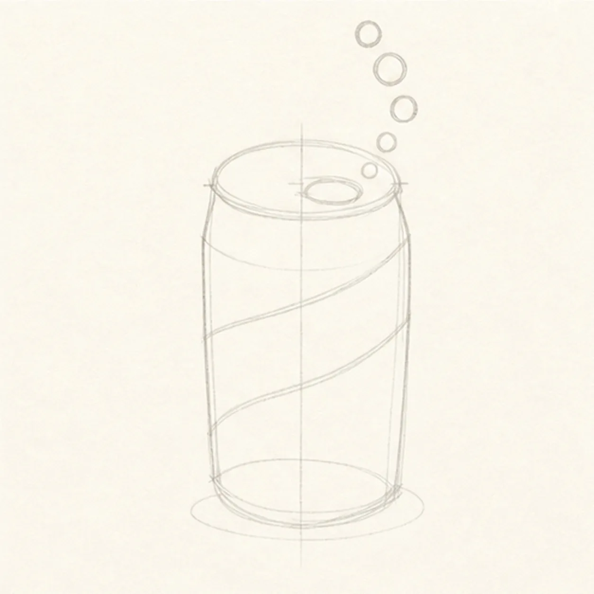
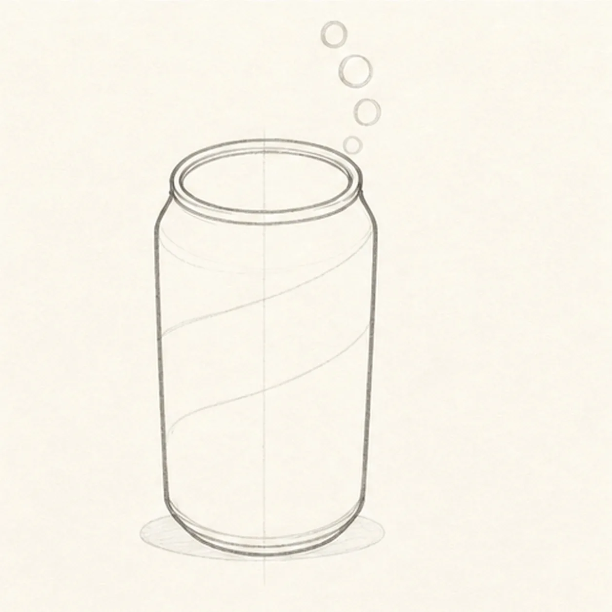
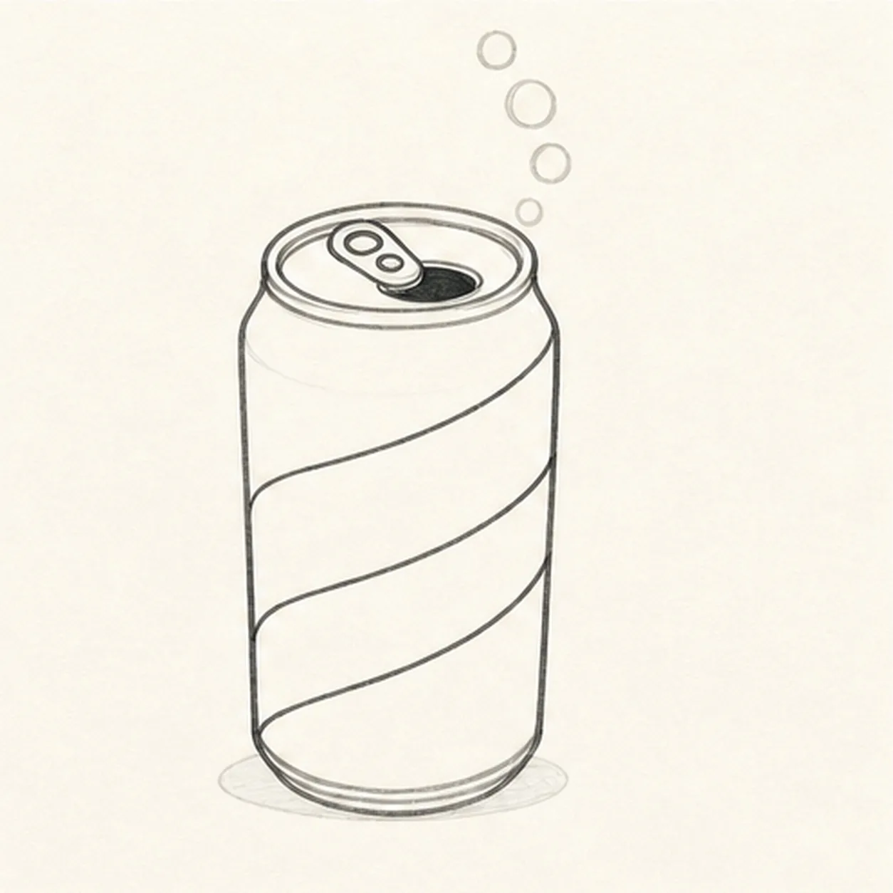
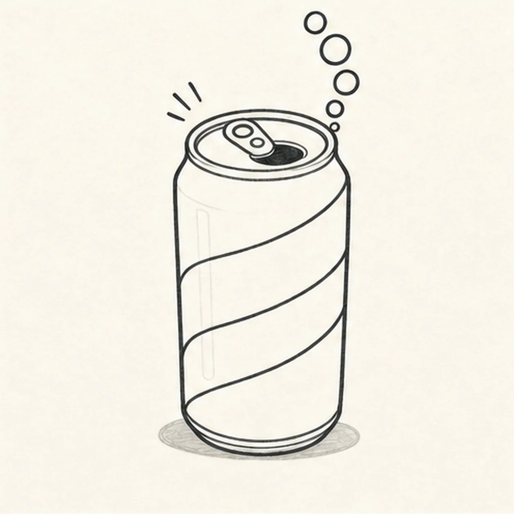
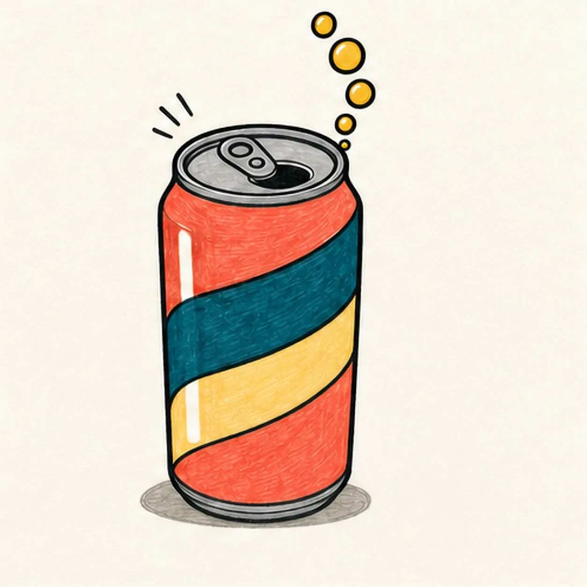

Felt-tip marker mode
Let's draw a fizzy soda can
Treat this as one playful practice round: sketch the idea loosely, simplify the shapes, then commit with confident marker outlines and bright fills.
-
01

Map the fizzy can
Draw a pale center axis, top ellipse, slightly tapered body sides, and bottom curve, then reserve the pull tab, two diagonal label bands, a curved route for exactly five bubbles, and one shallow shadow.
Marker tip: Ghost the top ellipse from your shoulder, then compare the two side angles against the center axis. Mark all five bubble positions while the lines are light so the arc has room above the tab.
-
02

Shape the can silhouette
Wrap the guides with the complete can body, top rim, short neck transition, and curved lower edge while keeping the tab, band, and bubble reserves visible.
Marker tip: Rotate the page for the top rim and pull both body sides in relaxed strokes. Keep the lower curve parallel to the top ellipse so the can feels cylindrical instead of flat.
-
03

Build the tab and label waves
Add one pull tab, one can opening, one center rivet, and exactly two blank diagonal label bands around the established can.
Marker tip: Let each band edge rise gently as it crosses the body, like a ribbon around a cylinder. Leave the bands completely text-free so their curve, not a logo, carries the design.
-
04

Pop five fizz bubbles
Add exactly five unequal bubbles along the reserved arc, exactly three short motion ticks beside the rim, two vertical paper-highlight gaps on the can, and one shallow shadow.
Marker tip: Start with the largest bubble near the top of the arc, then step down through smaller circles toward the opening. Count five bubbles and three ticks before reaching for black marker.
-
05

Ink the soda-shop colors
Thicken every established contour and fill the body coral red, the two bands deep teal and pale butter, the top and bottom cool gray, the five bubbles golden yellow, and the shadow warm gray while preserving marker streaks and both highlight gaps.
Marker tip: Color each long band with strokes that follow its curve, then let the fill dry before reinforcing the black edges. Uneven marker grain is welcome; crossing outside the established band shape is not.
-
06
![Handmade face-free marker drawing of one upright three-quarter soda can with a slightly tapered coral-red body, cool-gray top and bottom rims, one pull tab, one black can opening, one center rivet, two blank sweeping diagonal label bands in deep teal and pale butter, exactly five golden-yellow fizz bubbles rising in one curved arc, exactly three short black motion ticks, exactly two vertical warm-paper highlight gaps, thick imperfect black outlines, visible marker streaks, and one shallow warm-gray oval shadow](../assets/cartoon-soda-can-with-fizz-finished-v1.webp)
Make the fizz pop
Strengthen the keeper outlines and clarify the established can, rim, tab, opening, two blank bands, five bubbles, three motion ticks, two highlights, limited fills, and shallow shadow.
Marker tip: Count two bands, five bubbles, three ticks, and two highlight gaps, then stop. A brand name, face, straw, cup, extra can, sticker edge, or badge frame would turn this focused fizzy-can study into a different lesson.
![Handmade face-free felt-tip marker drawing of one plump raspberry-and-coral heart tilted slightly clockwise with one teal adhesive bandage crossing diagonally from lower left to upper right, one warm-yellow center pad, two rounded adhesive ends with exactly four open-paper ventilation dots total, two open-paper oval heart highlights, exactly two small warm-yellow sparkle accents, thick imperfect black outlines, visible marker streaks, a few pale construction traces, and one broken deep-navy shadow](../assets/heart-with-a-bandage-finished-v1.webp)
![Handmade face-free felt-tip marker drawing of one open book in a shallow three-quarter view with exactly two blank page blocks, one black V-shaped center gutter, one coral ribbon bookmark hanging from the gutter, one small curled outer corner on each page, exactly three stacked warm-yellow lower page-edge bands per side, raspberry marker fill across the left page and cover plane, teal marker fill across the right page and cover plane, small open-paper cover-edge highlights, thick imperfect black outlines, visible marker streaks, restrained edge hatching, and one broken deep-navy shadow](../assets/open-book-with-ribbon-bookmark-finished-v1.webp)
![Handmade face-free felt-tip marker drawing of one diagonal pickleball paddle with one thick oval face divided into raspberry, teal, and mustard color blocks by exactly two diagonal routes, one doubled black rim, one short neck, one coral handle with exactly three curved grip bands and a small end cap, one mustard pickleball at upper right with exactly seven visible open holes, two black paddle-swing arcs, exactly three black ball-speed dashes, two open-paper oval highlights on the paddle face, thick imperfect black outlines, visible marker streaks, and one broken deep-navy shadow beneath the handle](../assets/pickleball-paddle-and-ball-in-motion-finished-v1.webp)